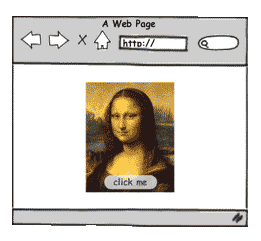

Development Environment
2 tools you need to get started
2 tools you need to get started
Choose a modern web browser that has good, built-in development tools to help make building web pages easier.
(If you are unable to install Chrome:
install
Firefox and
Firebug
.)
There are many, many free and paid options* but let's keep it simple for our mentors today and just use one to edit our code.
*Others include: TextMate, Notepad++, and Text Wrangler.
Ask a group of developers what they use and arguments will ensue -- it's a very personal choice! ;)
It's a programming language
It's one of the most popular programming languages.
So that means you're cool for learning it.
It can make web pages interactive and logical.
JavaScript can modify HTML and CSS
| HTML (Hypertext Markup Language) is the markup language. |
CSS (Cascading Style Sheets) is the style sheet language. |
JavaScript is the programming language. |
 |
 |  |
| It should define the content. | It should define the presentation | It should define behaviour. |
Experiment: Let's see what the web looks like without JavaScript
chrome://settings/contentDo not allow any site to run JavaScriptDone button.Notice anything different?
The modern web is slow and broken without JavaScript!
When you're done, go back to Content Settings and select Allow all sites to run JavaScript

At any time, someone can right-click and "view source" on a web page to see all the JavaScript that went into it.
(I suggest that you do this yourself every time you see something you like!)
Client-Side JavaScript: JavaScript runs most commonly in a web browser (e.g. Chrome, Safari, Firefox, Internet Explorer). This is called client-side JavaScript. Today we'll focus on client-side JavaScript.
JavaScript and Java are different: JavaScript is what we are learning today. Java is a completely different programming langauge.
js: The short-hand for JavaScript is js